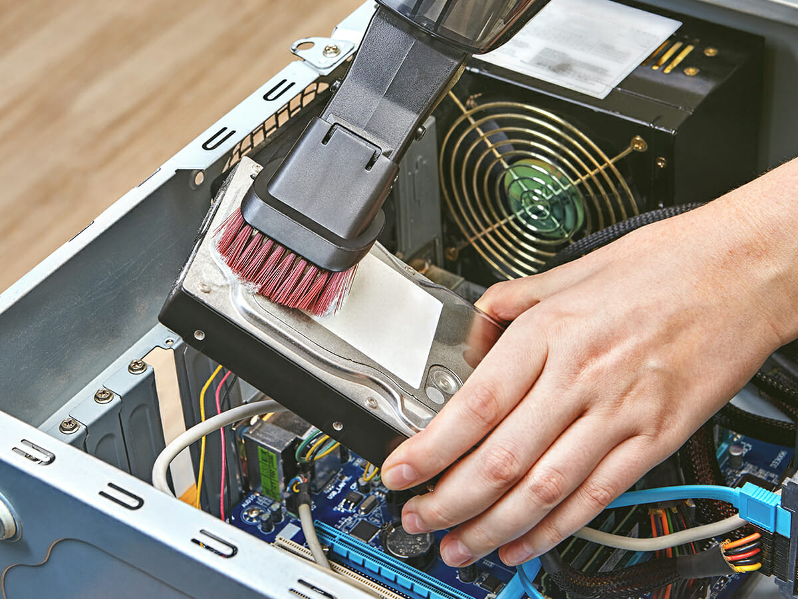
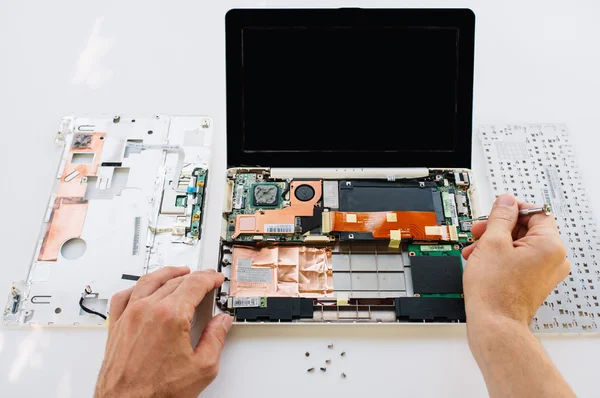

Mantenimiento PC
Ofrecemos mantenimiento preventivo y correctivo de computadoras de escritorio y portátiles, asegurando su máximo rendimiento y prolongando su vida útil.

Limpieza Interna
Eliminación de polvo y suciedad para evitar sobrecalentamiento.
Revisión de Hardware
Chequeo de discos, memorias y componentes para prevenir fallas.

Reparación de Portátiles
Soporte especializado en laptops y notebooks.